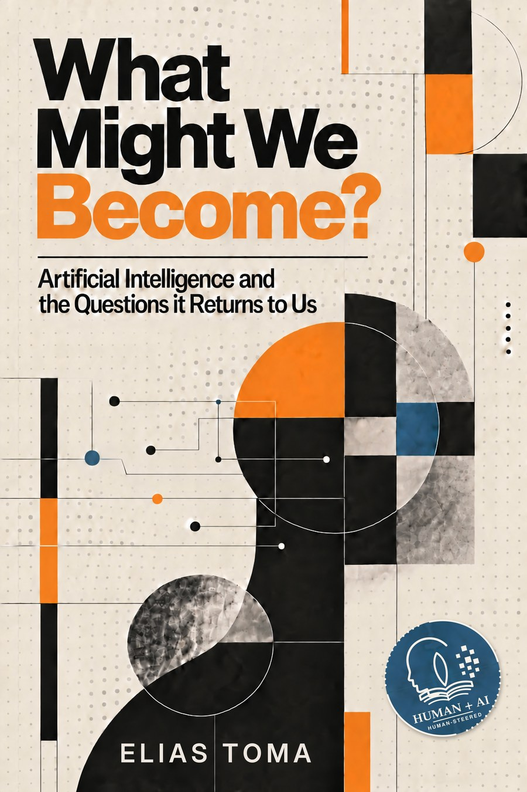

The Turing Test, Reversed
Its task is to decide whether you are human. Yours is to prove you are.

Artificial Intelligence and the Questions it Returns to Us
Pre-order; released 14 December 2026
Forthcoming. eBook available for pre-order on Amazon; print editions follow on release day.
eBook, paperback (6 x 9), hardcover.
“I wrote this book with a machine, and I will not pretend the preposition is innocent.” Opening sentence of Chapter 1
Who is speaking, when a sentence arrives already wearing emphasis, cadence, and tact? What does solitude mean when company is one tap away and never tired of us? Whose values ship inside the systems a billion people now consult before they consult each other?
What Might We Become? is written from inside the loop it examines: a years-long collaboration between a writer and the machines that are remaking writing, thinking, and work. It is neither a warning nor an advertisement. It is an attempt to be exact about what these systems are, what they are doing to us, and which questions they return to their makers unanswered.
The book ends by handing the page back to the archive such systems are pressed from: seven writers, from a Chinese wheelwright to an enslaved American teaching himself to read, given uncompressed time under their own names.
The machine got to speak throughout. The last word belongs to the inheritance.
Seventeen chapters · seven interludes · five parts
Who Is Speaking?The Animal That Builds MindsThe Archive That AnswersWhere the Work Goes
Who Is Forming Whom?Can We Still Be Alone?How Do We Think Together?What Are We to Each Other?What Is It Like to Be a Machine?What Remains Human?
Whose Values Ship?What Does It Matter Who Is Speaking?What Can We Still Check?Who Is Deciding?
The Economy of MindsThe Planetary BillGoverning the Ungovernable
Voices from the Archiveseven texts
Stories between the questions
Its task is to decide whether you are human. Yours is to prove you are.
Herbie Hancock plays a chord he knows is wrong. Miles Davis answers, and makes it right.
The world mourned a Mars rover with a dying sentence it never sent, and preferred it to the data.
Long before anyone built a machine that could hold a conversation, someone built one that told people what to do.
The metre: a measure meant to owe nothing to a king’s foot or a town’s custom.
Falaise, 1386. A sow on trial for a death, with a judge, a record, and costs.
Erase one letter and truth becomes death. The golem’s biography was a golem.
“A book about a voice compressed from a human inheritance owes that inheritance some uncompressed time.”
Elias Toma is a pen name. The choice is discussed in Chapter 12 of What Might We Become?, and the obligations it keeps are stated there: the name withholds part of a biography; it does not withhold responsibility for the pages. The author has spent years working with, and inside, the systems the book describes, and wrote it in collaboration with several of them. The nature, extent, and limits of that collaboration are the subject of Chapter 1.
Written with the machine. Answered for by a human.